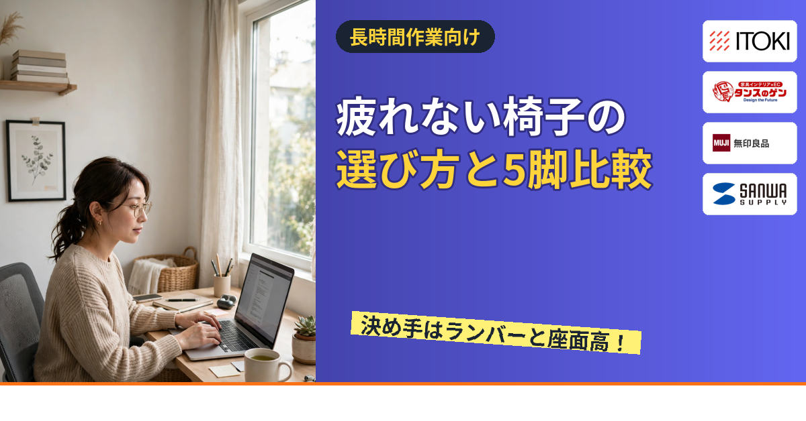
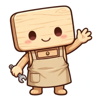

疲れないオフィスチェアの選び方とおすすめ5脚【長時間作業向け】


こんにちは、カグヤです。疲れにくさに直結する調整機能だけを抜き出して、椅子5脚を比べています。
「疲れない椅子」を探すときに大切なのは、ブランドよりも「自分の体に合わせられるか」です。腰を支えるランバーサポート、肘の置き場になるアームレスト、足裏が床につく座面の高さ。この3つが体に合っているかどうかで、長時間座ったときの疲れ方は変わります。この記事では、在宅ワーク向けの椅子5脚について、疲れにくさに直結する調整機能だけを抜き出して比べます。
イトーキ サリダYL7R：ランバーサポートの5段階調節、座面奥行の6段階調節、3Dアームレストまで備え、合わせられる範囲が5脚で最も広い椅子です。
- 予算を抑えて腰の支えがほしいなら：タンスのゲン 腰楽メッシュチェア（ランバーサポート付き・耐荷重約120kg）
- 肘の高さだけでも合わせたいなら：無印良品 ワーキングアームチェア（アーム高さ4段階）
疲れないオフィスチェアを選ぶときに重視すべき3つのポイント
1. ランバーサポート（腰の支え）
背もたれと腰のあいだにすき間ができると、腰まわりに負担が集まります。ランバーサポートがある椅子は、そのすき間を埋めて背骨のS字を保ちやすくなります。今回の5脚では、イトーキ サリダYL7Rが4cmの範囲で5段階に調節でき、タンスのゲン 腰楽メッシュチェアにもランバーサポートが付いています。
2. アームレスト（肘掛け）
キーボードやマウスを使う作業では、肘の置き場があるかどうかで肩まわりの疲れ方が変わります。高さだけでなく、前後や角度まで動かせるタイプなら、作業姿勢に合わせて細かく合わせられます。サリダYL7Rのアームレストは上下7段階、左右の角度は最大36°、前後は5cm（10段階）の範囲で動かせます。
3. 座面の高さ
座面が高すぎると足裏が浮いて太ももの裏が圧迫され、低すぎると膝が上がって腰が丸まります。目安は、座ったときに足裏全体が床につき、膝がほぼ直角になる高さです。5脚の座面高は約38.5cmから53.5cmまで幅があるので、自分の脚の長さとデスクの高さから逆算して選びましょう。小柄な人向けの座面高の「下限」の見方は、狭い部屋・小柄な人向けの選び方も参考にしてください。
調整機能で横並び比較｜疲れにくさの決め手だけを見る
| 商品名 | 座面 | 座面の高さ | 座面の前後（奥行）調節 | ヘッドレスト | ランバーサポート | アームレストの調整機能 | フットレスト |
|---|---|---|---|---|---|---|---|
| イトーキ サリダYL7R | モールドウレタン | 43〜53cm | あり（5.5cm・6段階） | あり（9段階） | あり（5段階調節） | 3D（上下・前後・左右） | なし |
| タンスのゲン 腰楽メッシュチェア | ウレタン（背はメッシュ） | 45〜52cm | なし | なし（ハイバック） | あり | 固定式（可動式も選択可） | なし |
| 無印良品 ワーキングアームチェア | ウレタンフォーム | 43〜53.5cm | なし | なし | なし | 高さ4段階・取り外し可 | なし |
| タンスのゲン 跳ね上げ肘チェア | ウレタンフォーム | 42.5〜50cm | なし | なし | なし | 跳ね上げ式 | なし |
| サンワサプライ OAチェア SNC-A1 | ウレタンフォーム | 約38.5〜47.5cm | なし | なし | なし | なし | なし |
| 価格・在庫の確認先：オフィスコムで家具を探す／家具350で家具を探す | |||||||
※横にスクロールできます。各社公式サイトの仕様（2026年11月25日確認）をもとに作成。
表で見ると、調節できる箇所の差ははっきりしています。長時間作業が前提なら、ランバーサポートと座面の奥行調節があるサリダYL7Rが頭一つ抜けています。一方で、座る時間が短い人や予備の椅子なら、機能を絞った軽い椅子のほうが扱いやすさで勝ります。

ポイントは、数値を公式スペックで横並びにして比べることです。出典つきの表で確かめてください。
公式スペック横断照合｜5脚の数値を出典つきで比べる
上の機能比較に、価格・重さ・耐荷重と出典を加えた照合表です。当サイトの独自情報として、各社公式サイトの仕様を横断で照合しました。
| 商品名 | 価格（税込） | 座面高 | 本体重量 | 耐荷重 | 調整機能の要点 | 出典（公式） |
|---|---|---|---|---|---|---|
| イトーキ サリダYL7R | 29,900円 | 約43〜53cm | 16.5kg | ― | ヘッドレスト9段階・ランバー5段階・座面奥行6段階・3Dアーム | イトーキ公式ニュースルーム |
| タンスのゲン 腰楽メッシュチェア | 公式サイトで確認 | 45〜52cm | 約15kg | 約120kg | ランバーサポート付き、肘は固定式（可動式も選択可） | タンスのゲン公式本店 |
| 無印良品 ワーキングアームチェア | 9,990円 | 43〜53.5cm | 11.2kg | ― | 肘の高さ4段階調節・取り外し可 | 無印良品公式ストア |
| タンスのゲン 跳ね上げ肘チェア | 公式サイトで確認 | 42.5〜50cm | 約9kg | 約100kg | 跳ね上げ式アーム | タンスのゲン公式本店 |
| サンワサプライ OAチェア SNC-A1 | 10,450円（メーカー参考価格） | 約38.5〜47.5cm | 7.3kg | 総耐荷重80kg | 背もたれチルト・前後調節 | サンワサプライ公式サイト |
※横にスクロールできます。価格・仕様は2026年11月25日に各社公式サイトで確認した内容です。「―」は公式仕様で確認できなかった項目です。タンスのゲンの2脚は公式通販で価格が変動するため「公式サイトで確認」としています。無印良品の本体重量は販売店の仕様欄による数値です。
長時間作業におすすめの椅子を詳しく見る
1位 イトーキ サリダYL7R｜長時間作業を快適に

| 本体サイズ | W655×D670×H1080〜1180mm（ヘッドレスト付きタイプ） |
| 座面高 | 約43〜53cm（10cmの範囲で上下） |
| ヘッドレスト | 9段階（最大19cm）の高さ調節＋2か所の首振り調節 |
| 腰の支え | ランバーサポートを4cmの範囲で5段階に調節 |
| 座面奥行 | 5.5cmの範囲で6段階に調節 |
| 背もたれ | 最大26°まで傾き、102°・111°・120°・128°の4段階で固定 |
| 肘掛け | 上下7段階、左右の角度は最大36°、前後は5cm（10段階） |
| 本体重量 | 16.5kg |
| 保証 | 最大3年（外観・表面仕上げ1年、機構部・可動部2年、構造部材3年） |
| 価格 | 29,900円（税込）※2026年11月25日に公式発表資料で確認 |
向いている人：1日6時間以上座り、肘・腰・背もたれを細かく合わせたい人
良い点：調節できる箇所がこの5脚で最も多く、頭・腰・肘・座面の奥行まで自分の体に合わせ込めます。座面は厚さ5.3cmのモールドウレタンで、型崩れしにくい素材です。
気になる点：本体重量が16.5kgあり、掃除のたびに動かす使い方には向きません。サイズも大きめなので、置き場所の幅と奥行を先に測っておきましょう。
イトーキ公式サイトで詳細を見る公式サイトへの通常リンクです2位 タンスのゲン 腰楽メッシュチェア｜背中まで支えたい

| タイプ | ハイバック（G-AIR） |
| 外寸 | 幅64〜66×奥行64〜66×高さ107〜114cm |
| 座面高 | 45〜52cm |
| 肘掛け | 固定式アーム（高さ64〜71cm）。可動式も選択可 |
| 腰の支え | 腰楽ランバーサポート付き |
| 本体重量 | 約15kg |
| 耐荷重 | 約120kg |
| キャスター | PUキャスター（床を傷つけにくい素材） |
| 価格 | 公式通販サイトで当日の価格を確認 |
向いている人：体格が大きめで、背中全体を支えたい人。耐荷重に余裕がほしい人
良い点：耐荷重約120kgはこの5脚で最も大きく、体格に余裕を持って選べます。ハイバックとランバーサポートで、背中から腰までを預ける座り方ができます。
気になる点：肘掛けは基本が固定式のため、デスク天板の下に肘が当たらないか確認が必要です。座面の最低高さが45cmなので、小柄な人は足が浮かないかを見ておきましょう。
タンスのゲン公式サイトで詳細を見る公式サイトへの通常リンクです3位 無印良品 ワーキングアームチェア｜部屋になじませたい

| 本体サイズ | W65×D66×H89〜98.5cm |
| 座面高 | 43〜53.5cm |
| 肘掛け | 座面から18〜25cmの範囲で4段階に調節、取り外し可能 |
| 背もたれ | 背メッシュ（通気性を考えた素材） |
| 本体重量 | 11.2kg（販売店の仕様欄による） |
| 価格 | 9,990円（税込）※2026年11月25日に公式ストアで確認 |
向いている人：リビングや寝室の一角で働き、部屋の雰囲気を崩したくない人
良い点：飾らない見た目で生活空間になじみやすく、肘掛けは高さを変えられるうえに取り外しもできます。背メッシュで蒸れにくい点も在宅ワーク向きです。
気になる点：ヘッドレストはなく、背もたれの角度や腰の支えを細かく調節する仕組みもありません。頭や腰まで支えたい人はサリダYL7Rと比べてください。
無印良品公式サイトで詳細を見る公式サイトへの通常リンクです疲れにくい座り方の基本
椅子を替える前に、今の座り方も見直しておきましょう。足裏全体を床につけ、背もたれに腰を預け、モニターの上端が目線とほぼ同じ高さになるよう置くのが基本です。どんな椅子でも、1時間に一度は立ち上がって体を動かすと、同じ姿勢で固まる疲れを避けられます。
椅子とあわせて、デスク・収納もまとめて探す
椅子を替えるタイミングは、デスクや収納を含めた作業場所全体を見直す良い機会です。オフィス家具をまとめて探すならオフィスコム、価格帯を抑えた家具を探すなら家具350が候補になります。個別商品の価格は日によって変わるため、各サイトで当日の価格・送料・サイズを確認してください。
オフィスコムで家具を探すオフィス家具の通販サイトへ 家具350で家具を探す価格帯を抑えた家具の通販サイトへよくある質問
Q1. 疲れない椅子の一番の決め手は何ですか？
ランバーサポート、肘掛け、座面の高さの3つが体に合っていることです。中でも、腰の支えを調節できるかどうかは長時間作業で差が出やすい部分です。
Q2. メッシュの椅子は疲れにくいですか？
メッシュは通気性がよく、蒸れにくい点が強みです。ただし疲れにくさは素材よりも、座面の高さや腰の支えが体に合っているかで決まります。素材と調整機能を分けて見ましょう。
Q3. ヘッドレストは必要ですか？
休憩時に頭を預けたい人や、背もたれにもたれる姿勢が多い人にはあると便利です。常時前傾で作業する人には必須ではありません。サリダYL7Rは9段階の高さ調節と首振り調節ができます。
Q4. 予算を抑えて疲れにくい椅子を選ぶなら？
ランバーサポート付きのタンスのゲン 腰楽メッシュチェアが候補です。価格は公式通販で変動するため、当日の価格を確認してください。価格帯別の考え方は価格帯別ガイドにまとめています。
Q5. 今の椅子にクッションを足すだけではだめですか？
座面の硬さだけが気になる場合は有効なこともあります。ただし座面の高さや腰の支えが合っていない場合は、クッションで座面高が上がって足が浮くなど、別の合わなさが出ることもあります。

まとめです。疲れにくさは、ランバーサポート・アームレスト・座面の高さが体に合うかどうかで変わってきます。
まとめ：疲れにくさは「合わせられる範囲」で決まる
疲れない椅子選びは、ランバーサポート・アームレスト・座面の高さの3点を、自分の体に合わせられるかどうかで見るのが近道です。合わせられる範囲が最も広いのはイトーキ サリダYL7R、腰の支えを押さえて予算を抑えるならタンスのゲン 腰楽メッシュチェアが候補になります。総合比較は比較トップもあわせてご覧ください。
関連記事
2026年11月25日：初版を作成しました。仕様は同日に各社公式サイトで確認した内容に基づきます。